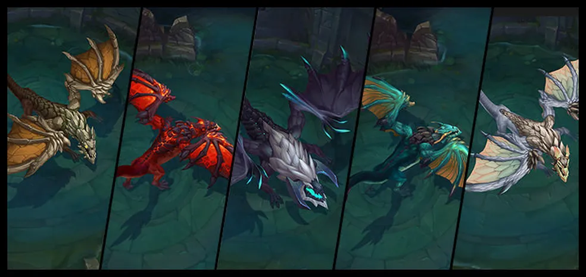
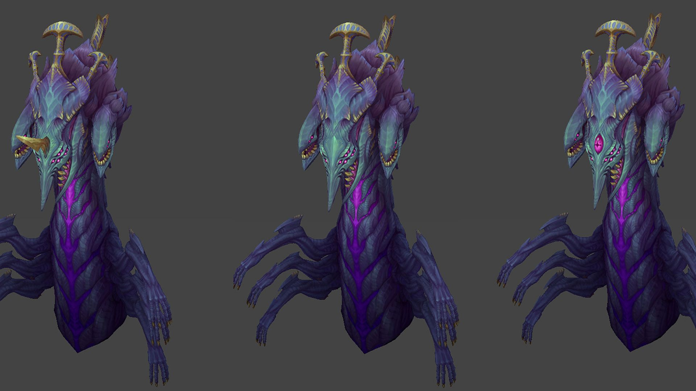
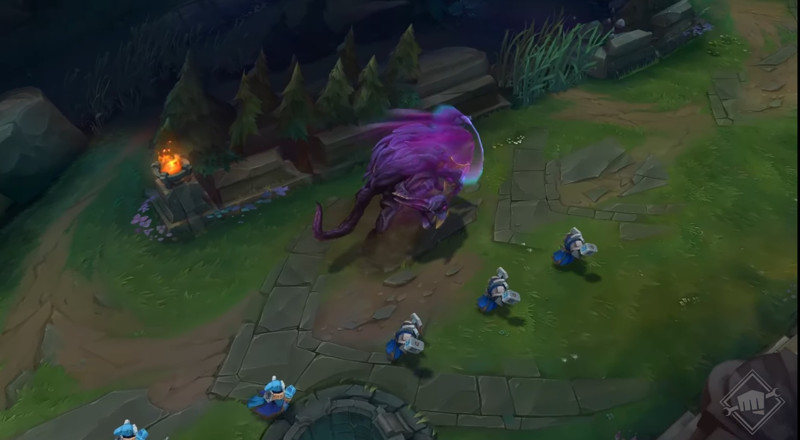
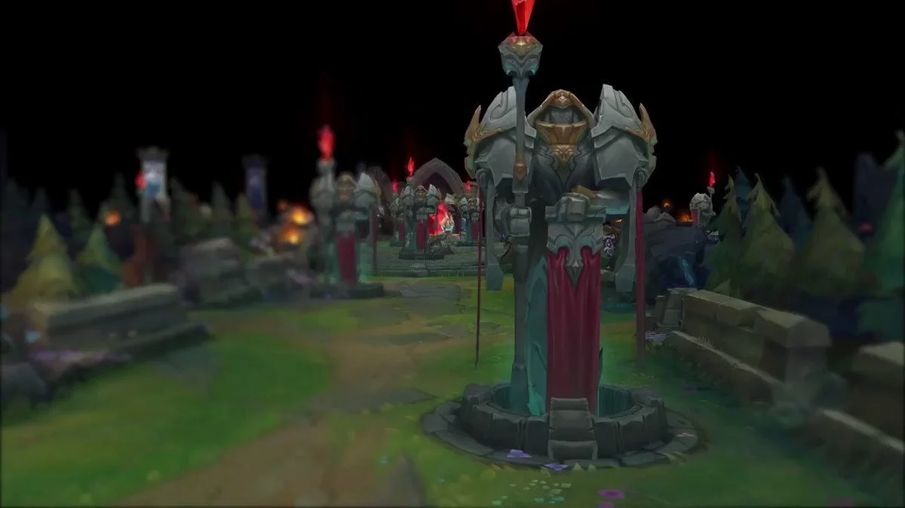

No Rift, não é apenas sobre abater campeões; os Objetivos do Mapa são as verdadeiras pedras angulares para a vitória. Controlar os dragões, o Barão Nashor, o Arauto do Vale e as Torres pode ser a diferença entre o domínio e a derrota. Prepare-se, invocador, pois garantir esses objetivos vai moldar o destino da sua equipe!
Dragões Elementais: O Poder dos Elementos a Seu Favor

Os Dragões Elementais são forças primordiais que surgem durante a partida, cada um representando um aspecto essencial de Runeterra. Abater esses dragões concede buffs permanentes ao seu time.
Dragão Infernal
Seu poder aumenta o dano de ataque e o poder de habilidade. Perfeito para times que buscam explosão de dano.
Dragão do Oceano
Abençoa sua equipe com regeneração de vida e mana fora de combate, permitindo que você se mantenha nas lutas por mais tempo.
Dragão da Montanha
Oferece resistência adicional, fortalecendo seu time para suportar ataques devastadores e emboscadas inimigas.
Dragão das Nuvens
Aumenta a velocidade de movimento e reduz o tempo de recarga dos feitiços de invocador, permitindo posicionamento ágil.
Alma do Dragão
Após abater quatro dragões, seu time ganha uma habilidade permanente poderosa que varia conforme o tipo do dragão final.
Barão Nashor: O Último Sopro da Vitória

O Barão Nashor é a criatura mais temida do Rift. Ao abatê-lo, seu time recebe um buff que concede aumento massivo de poder às tropas aliadas, além de regeneração de vida e mana.
Buff do Barão
Fortalece suas tropas, transformando-as em uma força imparável para derrubar torres e inibir o avanço inimigo.
Controle de Mapa
O Buff do Barão é uma ferramenta estratégica essencial para dominar o late game e invadir a base inimiga.
Arauto do Vale: O Gigante das Torres

No início do jogo, o Arauto desbloqueia uma poderosa vantagem. Ao derrotá-lo, você ganha o Olho do Arauto, que pode ser invocado para abrir caminho através das torres.
Investida Devastadora
Quando invocado, ele lança uma investida que causa dano massivo às torres, facilitando o push em rotas.
Controle de Torre
Excelente para garantir as primeiras torres do jogo, gerando ouro e vantagem de mapa para seu time.
Torres e Inibidores: A Chave para o Nexus

As Torres protegem o Nexus inimigo. Derrubar essas estruturas concede ouro e experiência, além de forçar o adversário a recuar.
Inibidores
Ao destruir um Inibidor, você libera super tropas na rota, tornando quase impossível para o time inimigo defender a base.
Super Tropas
Essas tropas são extremamente resistentes e criam uma pressão constante que obriga o inimigo a ficar preso na defesa.